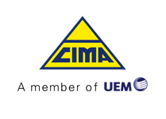
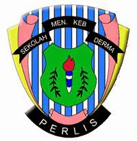

I am a Bachelor in Computer Science student, aiming to become an aspiring Web Application Developer based in Malaysia.
Previous experiences are System Programmer during my 2 months
internship, and 1 month Part Time Laravel Programmer.
I also developed Hybrid Mobile Application during both the internship
and part time.
My work objectives are to be able to build my career and at the same time contribute to the company through my computer proficiency.
My passion is always about Computer and Technology. I discovered my interest in this field back when I was 15 years old. I started blogging, and learned basic HTML and Website designing. I am a person who is able to learn by myself. As an example, I learned most of the Web Development myself, from online tutorials and courses.
One of my hobbies is contributing to open source communities, such as GitHub. Each of my projects was published to GitHub. Other than that, I also contributed to Stack Overflow during my free time, such as answering the questions of others. I believed that knowledge should be shared with the others.
Primary Skill Set:
|
Code Technology Sdn. Bhd. Part Time Laravel Programmer December 2016 - January 2017 (2 months) Kuala Lumpur, Malaysia
Work remotely from home as a Laravel Programmer for the period of 1 Month while waiting for the University Bachelor intake. |
|
|  |
Cement Industries of Malaysia Berhad (CIMA) IT Intern and Web Application Programmer April 2016 - June 2016 (3 months) Perlis, Malaysia
Work remotely from home as a Laravel Programmer for the period of 1 Month while waiting for the University Bachelor intake. |
|
Universiti Teknologi MARA Kampus Tapah, Perak Bachelor of Computer Science (Hons), Computer Science 2016 - 2019 |
|
|
Universiti Teknologi MARA Kampus Arau, Perlis Diploma in Computer Science, Computer Science, 3.87 2014 - 2016 |
|
|  |
Sekolah Menengah Kebangsaan Derma, Perlis Penilaian Menengah Rendah (PMR), 8A . Sijil Pelajaran Malaysia (SPM), 2A+ 2A 1A- 2009 - 2013 |
|
1st Place in International Competitive Programming Competition (I-CPROM) September 2018 - Universiti Teknologi MARA Perlis |
|
Anugerah Naib Canselor (ANC) November 2016 - Universiti Teknologi MARA Perlis |
|
3rd Place in Competitive Programming Competition (CPROM) September 2016 - Universiti Teknologi MARA Perlis |
|
Top System Winner for Systanalysta System Development Competition March 2016 - Universiti Teknologi MARA Perlis |